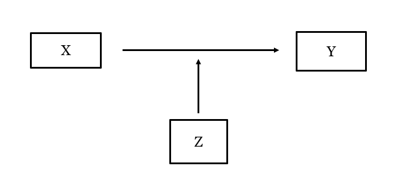
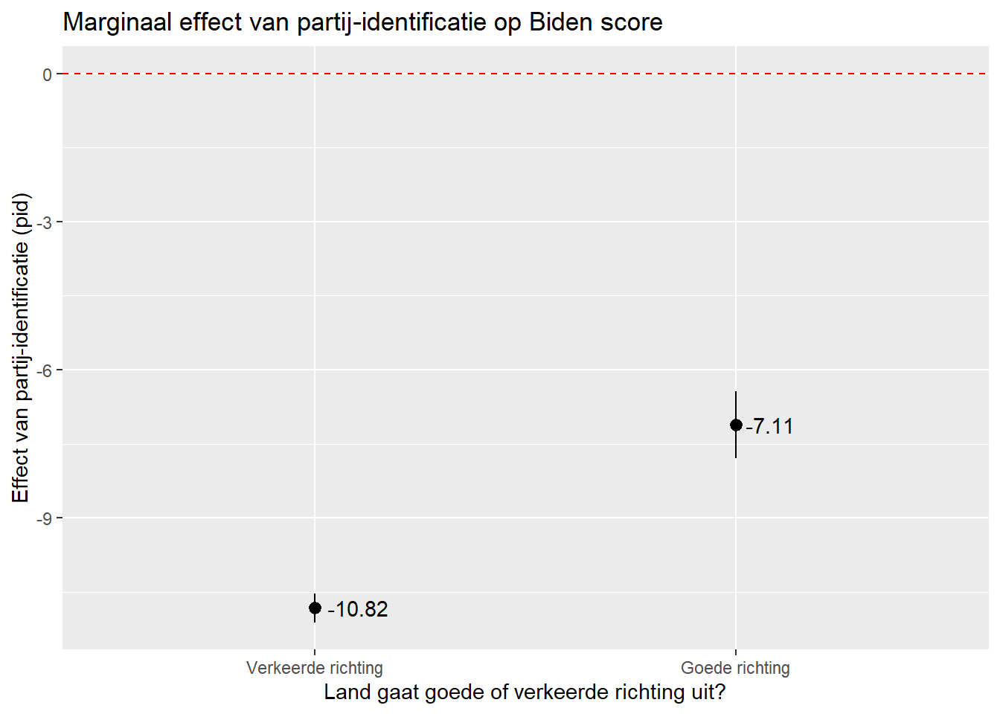
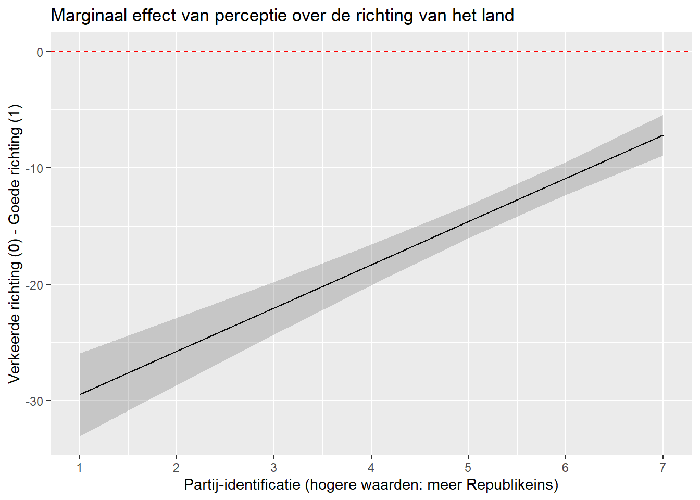

#Packages
library(broom) #Modelresultaten
library(rio) #laden van data
library(tidyverse) #data manipulatie en grafieken
library(marginaleffects) #marginale effecten en voorspelde waarden berekenen
#Data
anes <- import("data/anes_interactions.rda")
#Modellen
biden_int <- lm(biden ~ pid * right_track + rural_urban, data = anes)
righttrack_int <- glm(right_track ~ vote2016 * age + rural_urban,
family = "binomial", data = anes)16 Marginale Effecten in Interactiemodellen
In het vorige hoofdstuk bespraken we hoe we een interactieterm toe te voegen aan een regressiemodel. Zo kunnen we nagaan of het effect van een onfahankelijke variabele verschilt naargelang een andere onafhankelijke variabale andere waarden aanneemt:

In dit model bekijken we bijvoorbeeld of iemands evaluatie van Joe Biden afhangt van partij-identificatie, oordeel of het land in de juiste of verkeerde richting gaat, en de interactie tussen deze 2 predictors.
tidy(biden_int, conf.int = TRUE) # A tibble: 7 × 7
term estimate std.error statistic p.value conf.low conf.high
<chr> <dbl> <dbl> <dbl> <dbl> <dbl> <dbl>
1 (Intercept) 95.7 0.673 142. 0 94.3 97.0
2 pid -10.8 0.147 -73.7 0 -11.1 -10.5
3 right_trackRight Dir… -33.2 2.16 -15.4 1.93e-52 -37.4 -29.0
4 rural_urbanRural -4.08 0.816 -5.00 5.79e- 7 -5.68 -2.48
5 rural_urbanSmall Town -2.81 0.697 -4.03 5.60e- 5 -4.17 -1.44
6 rural_urbanCity -0.320 0.667 -0.480 6.31e- 1 -1.63 0.987
7 pid:right_trackRight… 3.71 0.373 9.96 3.20e-23 2.98 4.45 Wat betekenen deze coëfficiënten nu? Het toevoegen van een interactieterm leidt tot andere interpretaties dan degene die we hiervoor hebben gezien in modellen zonder interacties.
Interpretatie
De coëfficiënten van de variabelen die de interactie opmaken interpreteren we niet op dezelfde manier als coëfficiënten die geen deel uitmaken van een interactie.
Stel bijvoorbeeld dat we het volgende model hebben: Y = Constante + Variabele 1 + Variabele 2 + (Variabele 1 * Variabele 2).
- Coëfficiënt voor Variabele 1 (bv.,
pid): het verband tussen de Variabele 1 en Y als Variabele 2 (bv.,right_track) gelijk is aan 0. - Coëfficiënt voor Variable 2 (bv.,
right_track): het verband tussen de Variabele 2 en Y als Variabele 1 (bv.,pid) gelijk is aan 0.1 - Coëfficiënt voor de interactievariabele (bv.,
right_trackRight Direction): Hoe verandert de regressiecoëfficiënt voor een van de variabelen in de interactie als de andere variabele met 1 eenheid stijgt?- 1) Hoe verandert het verband tussen
pidenbidenalsright_trackmet 1 eenheid stijgt? OF - 2) Hoe verandert het verband tussen
right_trackenv2x_polyarchyalspidmet 1 eenheid stijgt?
- 1) Hoe verandert het verband tussen
Interactietermen kunnen moeilijk zijn om te interpreteren op basis van de standaard output van een regressieanalyse. Het berekenen en plotten van marginale effecten kan de interpretatie vergemakkelijken voor jezelf en je lezers: Wat is de verwachte verandering in Y als X met 1 eenheid stijgt. Deze verandering drukken we uit in eenheden voor een continue Y (OLS) en in percenpunten kans voor een binaire Y. Bij een interactie-effect berekenen (en plotten) we de verwachte verandering in Y als X met 1 eenheid stijgt voor verschillende waarden van een andere predictor Z. We gebruiken de slopes() functie uit het marginaleffects package.
We geven hieronder voorbeelden voor verschillende types onafhankelijke variabelen (bv. binair x continu, continu * continue etc).2
16.1 Binaire X Continue Interactie
16.1.1 Berekening en interpretatie
We bekijken eerst hoe we de marginale effecten berekenen voor een interactie tussen een binaire en continue variabele. Dit was het geval voor ons ‘biden_int’ model waarin een interactie werd toegevoegd tussen partij-identificatie (pid, loopt van 1 ‘Overtuigd Democraat’ tot 7 ‘Overtuigd Republikein’) en right_track (waarbij ‘0’ betekent dat een respondent vindt dat het de verkeerde richting uitgaat met het land en ‘1’ dat het de goede richting uitgaat met het land).
Hier gebruiken we de slopes() functie om het effect van pid op Biden scores te berekenen voor elke waarde van right_track. Wanneer de moderator (Z) een factor variabele is, zoals hier het geval is, gebruiken we de volgende code:
slopes(biden_int,
variables = "pid",
by = "right_track")
Term Contrast right_track Estimate Std. Error z Pr(>|z|) S
pid mean(dY/dX) Wrong Track -10.82 0.147 -73.7 <0.001 Inf
pid mean(dY/dX) Right Direction -7.11 0.344 -20.7 <0.001 312.7
2.5 % 97.5 %
-11.11 -10.54
-7.78 -6.44
Columns: term, contrast, right_track, estimate, std.error, statistic, p.value, s.value, conf.low, conf.high, predicted_lo, predicted_hi, predicted
Type: response slopes(biden_int,-
We passen de functie
slopestoe op het model tussen haakjes. variables = "pid"-
We duiden hier de onafhankelijke variabele aan waarvoor we de verschillende marginale effecten willen berekenen. Voor eigen toepassingen voeg je hier je eigen continue variabele toe.
by = "right_track"-
Hier wordt de moderator variabele aangeduid. De code kan enkel gebruikt worden als de moderator een factor is.
De helling van de regressielijn voor pid als right_track = ‘Right Direction’” is -7.11. De helling van pid wanneer right_track = ‘Wrong Track’ is -10.82. Het effect van partij-identificatie op de score voor Biden is sterker (negatiever) als respondenten vinden dat het de verkeerde richting uitgaat met het land. Dit effect is ook statistisch significant (p < 0.001). Dit zien we aan de p-waarde voor de interactie-term (zie onder). We kunnen de nulhypothese verwerpen dat het effect van pid niet verschilt naargelang right_track andere waarden aanneemt.
Je ziet ook dat het effect van pidals right_track = ‘Wrong Track’ gelijk is aan de coëfficiënt van pid in het model (dit effect geldt als moderator 0 is). Het verschil tussen de 2 marginale effecten is gelijk aan de waarde van de interactiecoëfficiënt.
#resultaten om coëfficiënten en significantie te tonen
tidy(biden_int) |> select(term, estimate, p.value)# A tibble: 7 × 3
term estimate p.value
<chr> <dbl> <dbl>
1 (Intercept) 95.7 0
2 pid -10.8 0
3 right_trackRight Direction -33.2 1.93e-52
4 rural_urbanRural -4.08 5.79e- 7
5 rural_urbanSmall Town -2.81 5.60e- 5
6 rural_urbanCity -0.320 6.31e- 1
7 pid:right_trackRight Direction 3.71 3.20e-23#Marginaal effect (Right Direction) - Marginaal effect (Wrong Track) = coëfficiënt van de interactieterm
-7.11 - (-10.82)[1] 3.71We kunnen ook onderzoeken hoe het effect van de factor variabele right_track op de afhankelijke variabele anders is voor verschillende waarden van partij-identificatie. We kiezen er hier voor de effecten te berekenen voor elke waarde van pid gezien er maar 7 waarden zijn.
slopes(biden_int,
variables = "right_track",
newdata = datagrid(pid = c(1,2,3,4,5,6,7)))
Term Contrast pid Estimate Std. Error z
right_track Right Direction - Wrong Track 1 -29.47 1.811 -16.28
right_track Right Direction - Wrong Track 2 -25.76 1.473 -17.48
right_track Right Direction - Wrong Track 3 -22.05 1.158 -19.04
right_track Right Direction - Wrong Track 4 -18.33 0.888 -20.64
right_track Right Direction - Wrong Track 5 -14.62 0.718 -20.37
right_track Right Direction - Wrong Track 6 -10.90 0.721 -15.13
right_track Right Direction - Wrong Track 7 -7.19 0.895 -8.03
Pr(>|z|) S 2.5 % 97.5 %
<0.001 195.4 -33.02 -25.92
<0.001 224.9 -28.65 -22.87
<0.001 266.0 -24.32 -19.78
<0.001 311.9 -20.07 -16.59
<0.001 303.9 -16.02 -13.21
<0.001 169.4 -12.31 -9.49
<0.001 49.9 -8.94 -5.43
Columns: rowid, term, contrast, estimate, std.error, statistic, p.value, s.value, conf.low, conf.high, pid, predicted_lo, predicted_hi, predicted, right_track, rural_urban, biden
Type: response newdata = datagrid(pid = c(1,2,3,4,5,6,7)))-
We geven hier de waarden op van de moderator waarvoor marginale effecten van de andere predictor berekend moeten worden. De waarden dien je te veranderen voor eigen toepassingen. We gebruiken “newdata = datagrid()” omdat pid hier als continue variabele wordt gebruikt.
De output hierboven toont dat het effect van right_ direction'_trackongeveer -29.47 punten is voor overtuigde Democraten (pid=1), -25.76 punten voor minder overtuigde Democraten (pid = 2), en -7.19 punten voor overtuigde Republikeinen (pid=7). Het effect van de right_track variabele daalt met 3.71 eenheden telkens als pidmet 1 eenheid stijgt: dit is de waarde van de interactiecoëfficiënt.
##resultaten om coëfficiënten en significantie te tonen
tidy(biden_int) |> select(term, estimate, p.value)# A tibble: 7 × 3
term estimate p.value
<chr> <dbl> <dbl>
1 (Intercept) 95.7 0
2 pid -10.8 0
3 right_trackRight Direction -33.2 1.93e-52
4 rural_urbanRural -4.08 5.79e- 7
5 rural_urbanSmall Town -2.81 5.60e- 5
6 rural_urbanCity -0.320 6.31e- 1
7 pid:right_trackRight Direction 3.71 3.20e-23#Marginaal effect (PID = 2) - Marginaal effect (PID = 1) = coëfficiënt van de interactieterm
-25.76 - (-29.47)[1] 3.71#Marginaal effect (PID = 7) - Marginaal effect (PID = 6) = coëfficiënt van de interactieterm
-7.19 - (-10.90)[1] 3.71De statistisch significante interactieterm leidt ertoe dat we de nulhypothese verwerpen dat het effect van right_track gelijk blijft als pidverandert.
16.1.2 Plotten
Marginale effecten worden vaak gevisualiseerd in een grafiek. De y-as in deze grafieken is het geschatte marginale effect en de x-as is de waarde die de moderator aanneemt. We bekijken eerst het voorbeeld waarbij de factor variabele de moderator is. De ggplot code hebben we gebruikt in eerdere weken. Belangrijk: we gebruiken geom_pointrange wanneer de moderator een factor is (hier: right_track).
slopes(biden_int,
variables = "pid",
by = "right_track") |>
ggplot(aes(x = right_track, y = estimate)) +
geom_pointrange(aes(ymin = conf.low, ymax = conf.high)) +
labs(title = "Marginaal effect van partij-identificatie op Biden score",
y = "Effect van partij-identificatie (pid)",
x = "Land gaat goede of verkeerde richting uit?") +
geom_text(aes(label = round(estimate, 2)), hjust = -0.2) +
geom_hline(yintercept = 0, linetype = 'dashed', color = 'red') +
scale_x_discrete(labels = c("Wrong Track" = "Verkeerde richting", "Right Direction" = "Goede richting"))- 1
-
In dit voorbeeld nemen we de output van
slopes()onmiddellijk op metggplot()via de pipe operator. We zouden ook de resultaten vanslopes()in een data object kunnen opslaan en die resultaten gebruiken voor een nieuweggplot()functie.

En hier is het voorbeeld waarbij de continue variabele de moderator is. We gebruiken nu geom_line() in combinatie met geom_ribbon:
#Effect van right_track bij verschillende waarden pid
slopes(biden_int,
variables = "right_track",
newdata = datagrid(pid = c(1,2,3,4,5,6,7))) |>
ggplot(aes(x=pid, y=estimate)) +
geom_line() +
geom_ribbon(aes(ymin=conf.low, ymax=conf.high), alpha = 0.2) +
labs(title = "Marginaal effect van perceptie over de richting van het land" ,
y = "Verkeerde richting (0) - Goede richting (1)",
x = "Partij-identificatie (hogere waarden: meer Republikeins)") +
geom_hline(yintercept = 0, linetype = 'dashed', color = 'red') +
scale_x_continuous(breaks=c(1,2,3,4,5,6,7))- 1
-
Zonder deze regel zou
ggplot()enkel ticks tonen bij 2, 4, and 6. Dit is vaak voldoende maar hier is het handig het volledige bereik van de continue variabele te kunnen plotten (1 tot 7).

16.2 Continue X Continue Interactie
De code voor de berekening van marginale effecten bij een interactie tussen 2 continue variabelen volgt dezelfde principes. In het voorbeeld hier voorspellen we de score voor Biden op basis van de volgende onafhankelijke variabelen: age (leeftijd), socialists (evaluatie van socialisten op een schaal van 0 (‘heel koud of ongunstig’) tot 100 (‘heel warm of gunstig’), en rural_urban als controlevariabele.
#Model schatten en resultaten opslaan in object
biden_int2 <- lm(biden ~ socialists * age + rural_urban, data = anes)
#Resultaten printen
tidy(biden_int2)# A tibble: 7 × 5
term estimate std.error statistic p.value
<chr> <dbl> <dbl> <dbl> <dbl>
1 (Intercept) 30.0 2.00 15.0 4.68e-50
2 socialists 0.197 0.0381 5.17 2.46e- 7
3 age -0.0752 0.0345 -2.18 2.95e- 2
4 rural_urbanRural -10.9 1.08 -10.1 9.02e-24
5 rural_urbanSmall Town -7.04 0.924 -7.62 3.00e-14
6 rural_urbanCity 0.455 0.883 0.516 6.06e- 1
7 socialists:age 0.00980 0.000699 14.0 6.21e-44Het interactie-effect is statistisch significant. We kunnen dit effect op twee manieren onderzoeken. We kunnen de marginale effecten berekenen van leeftijd op Biden score bij verschillende waarden voor socialisten. Of we berekenen de marginale effecten van socialisten op Biden score bij verschillende leeftijden. In beide gevallen moeten we waarden voor de continue moderator aanduiden in de syntax. We kiezen hier logische waarden in lijn met de schaal van de variabelen.
#Marginaal effect van leeftijd bij socialists = 0, 10, 20...100
slopes(biden_int2,
variables = "age",
newdata = datagrid(socialists = seq(from = 0, to = 100, by = 10)))
#Marginaal effect van socialists bij leeftijd = 20,30,40...80
slopes(biden_int2,
variables = "socialists",
newdata = datagrid(age = seq(from = 20, to = 80, by = 10)))- 1
- Leeftijd reikt van 18 tot 80 in de dataset (respondeten ouder dan 80 krijgen gewoon de score 80).
Term socialists Estimate Std. Error z Pr(>|z|) S 2.5 % 97.5 %
age 0 -0.0752 0.0345 -2.177 0.0295 5.1 -0.1429 -0.00751
age 10 0.0228 0.0292 0.781 0.4350 1.2 -0.0344 0.07990
age 20 0.1207 0.0247 4.895 <0.001 20.0 0.0724 0.16907
age 30 0.2187 0.0215 10.156 <0.001 78.1 0.1765 0.26090
age 40 0.3167 0.0204 15.528 <0.001 178.2 0.2767 0.35664
age 50 0.4146 0.0216 19.239 <0.001 271.6 0.3724 0.45688
age 60 0.5126 0.0247 20.724 <0.001 314.5 0.4641 0.56108
age 70 0.6106 0.0293 20.841 <0.001 318.0 0.5532 0.66799
age 80 0.7085 0.0346 20.457 <0.001 306.6 0.6407 0.77643
age 90 0.8065 0.0405 19.919 <0.001 290.9 0.7272 0.88587
age 100 0.9045 0.0467 19.373 <0.001 275.3 0.8130 0.99599
Columns: rowid, term, estimate, std.error, statistic, p.value, s.value, conf.low, conf.high, socialists, predicted_lo, predicted_hi, predicted, age, rural_urban, biden
Type: response
Term age Estimate Std. Error z Pr(>|z|) S 2.5 % 97.5 %
socialists 20 0.393 0.0253 15.6 <0.001 178.7 0.343 0.442
socialists 30 0.491 0.0195 25.2 <0.001 463.6 0.453 0.529
socialists 40 0.589 0.0147 40.1 <0.001 Inf 0.560 0.618
socialists 50 0.687 0.0123 55.9 <0.001 Inf 0.663 0.711
socialists 60 0.785 0.0136 57.8 <0.001 Inf 0.758 0.811
socialists 70 0.883 0.0178 49.7 <0.001 Inf 0.848 0.917
socialists 80 0.981 0.0233 42.0 <0.001 Inf 0.935 1.026
Columns: rowid, term, estimate, std.error, statistic, p.value, s.value, conf.low, conf.high, age, predicted_lo, predicted_hi, predicted, socialists, rural_urban, biden
Type: response We kunnen in de output zien dat het effect van leeftijd negatief en statistisch signficant is als de socialistsvariabele de waarde 0 aanneemt (-0.0752 [95% CI: -0.143, -0.008]). Dit is gelijk aan de coëfficiënt voor age. Het effect van leeftijd wordt steeds positiever als socialists hogere waarden aanneemt. We wien ook dat het effect van socialistspositief is voor jonge mensen (bv., het effect voor respondenten van 20 jaar is 0.39 [0.34, 0.44]). Dit effect wordt positiver naarmate mensen ouder zijn.3
Om te plotten gebruiken we de code voor wanneer de moderator een continue variabele is (zie boven, Paragraaf 16.1.2).
16.3 Binaire x Binaire Interactie
Wanneer de interactievariabele een vermenigvuldiging is van 2 binaire factor variabelen zijn wederom dezelfde principes van toepassing. Hier voorspellen we de score voor Biden met een interactie tussen right_track en vote2016 (met rural_urban als controlevariabele).
#Model schatten en resultaten opslaan
biden_int3 <- lm(biden ~ right_track * vote2016 + rural_urban, data = anes)
#Overzicht resultaten
summary(biden_int3)
Call:
lm(formula = biden ~ right_track * vote2016 + rural_urban, data = anes)
Residuals:
Min 1Q Median 3Q Max
-78.83 -13.61 -0.28 14.27 84.72
Coefficients:
Estimate Std. Error t value
(Intercept) 78.3730 0.5811 134.877
right_trackRight Direction -25.2460 2.1072 -11.981
vote2016Trump Vote -51.6157 0.7699 -67.039
rural_urbanRural -2.7666 0.9071 -3.050
rural_urbanSmall Town -1.6706 0.7850 -2.128
rural_urbanCity 0.4524 0.7534 0.601
right_trackRight Direction:vote2016Trump Vote 13.7690 2.2780 6.044
Pr(>|t|)
(Intercept) < 2e-16 ***
right_trackRight Direction < 2e-16 ***
vote2016Trump Vote < 2e-16 ***
rural_urbanRural 0.0023 **
rural_urbanSmall Town 0.0334 *
rural_urbanCity 0.5482
right_trackRight Direction:vote2016Trump Vote 1.61e-09 ***
---
Signif. codes: 0 '***' 0.001 '**' 0.01 '*' 0.05 '.' 0.1 ' ' 1
Residual standard error: 20.89 on 5195 degrees of freedom
(3078 observations deleted due to missingness)
Multiple R-squared: 0.6608, Adjusted R-squared: 0.6604
F-statistic: 1687 on 6 and 5195 DF, p-value: < 2.2e-16De marginale effecten worden als volgt berekend:
#right_track als moderator
slopes(biden_int3,
variables = "vote2016",
by = "right_track")
Term Contrast right_track Estimate
vote2016 mean(Trump Vote) - mean(Clinton Vote) Wrong Track -51.6
vote2016 mean(Trump Vote) - mean(Clinton Vote) Right Direction -37.8
Std. Error z Pr(>|z|) S 2.5 % 97.5 %
0.77 -67.0 <0.001 Inf -53.1 -50.1
2.15 -17.6 <0.001 227.0 -42.1 -33.6
Columns: term, contrast, right_track, estimate, std.error, statistic, p.value, s.value, conf.low, conf.high, predicted_lo, predicted_hi, predicted
Type: response #vote2016 als moderator
slopes(biden_int3,
variables = "right_track",
by = "vote2016")
Term Contrast vote2016 Estimate
right_track mean(Right Direction) - mean(Wrong Track) Clinton Vote -25.2
right_track mean(Right Direction) - mean(Wrong Track) Trump Vote -11.5
Std. Error z Pr(>|z|) S 2.5 % 97.5 %
2.107 -12.0 <0.001 107.5 -29.4 -21.12
0.866 -13.2 <0.001 130.7 -13.2 -9.78
Columns: term, contrast, vote2016, estimate, std.error, statistic, p.value, s.value, conf.low, conf.high, predicted_lo, predicted_hi, predicted
Type: response De eerste resultaten tonen dat 2016 Trump kiezers een slechtere indruk van Biden hebben dan 2016 Clinton kiezers, ongeacht wat ze vinden van het land. Maar het verschil is groter voor respondenten die vinden dat het land de verkeerde richting opgaat (verschil = -51.6) dan zij die vinden dat het de goede kant uitgaat (-37.80). Dit verschil is gelijk aan de interactiecoëfficiënt. Deze coëfficiënt was ook statistisch significant.
Om dit te plotten gebruiken we de code voor wanneer de moderator een factor variabele is (zie boven Paragraaf 16.1.2).
16.4 Logistische regressie: voorbeeld
Bij logistische regressie worden de marginale effecten met dezelfde code berekend. Hier geven deze effecten de gemiddelde verandering in voorspelde kans weer in percentpunten (zie Hoofdstuk 10).
We hebben reeds een righttrack_int model berekend, waarin we een interactie tussen age en vote2016 hebben toegevoegd. We bekijken de resultaten nogmaals:
Here are the interaction model again:
#Our model
tidy(righttrack_int)# A tibble: 7 × 5
term estimate std.error statistic p.value
<chr> <dbl> <dbl> <dbl> <dbl>
1 (Intercept) -2.95 0.345 -8.56 1.08e-17
2 vote2016Trump Vote 2.82 0.373 7.55 4.22e-14
3 age -0.00946 0.00630 -1.50 1.33e- 1
4 rural_urbanRural 0.208 0.111 1.87 6.15e- 2
5 rural_urbanSmall Town 0.111 0.101 1.10 2.73e- 1
6 rural_urbanCity 0.160 0.111 1.45 1.47e- 1
7 vote2016Trump Vote:age 0.0129 0.00682 1.89 5.84e- 2De interactie is tussen age (continue variabele) en vote2016 (binaire factor variabelen). We berekenen de marginale effecten als volgt:
# age als moderator op = 20, 30...80
slopes(righttrack_int,
variables = "vote2016",
newdata = datagrid(age = seq(from = 20, to = 80, by = 10)))
Term Contrast age Estimate Std. Error z Pr(>|z|) S
vote2016 Trump Vote - Clinton Vote 20 0.443 0.0300 14.8 <0.001 161.9
vote2016 Trump Vote - Clinton Vote 30 0.455 0.0244 18.7 <0.001 255.6
vote2016 Trump Vote - Clinton Vote 40 0.467 0.0199 23.4 <0.001 400.7
vote2016 Trump Vote - Clinton Vote 50 0.479 0.0173 27.7 <0.001 558.2
vote2016 Trump Vote - Clinton Vote 60 0.490 0.0172 28.6 <0.001 593.7
vote2016 Trump Vote - Clinton Vote 70 0.501 0.0195 25.7 <0.001 481.7
vote2016 Trump Vote - Clinton Vote 80 0.512 0.0235 21.8 <0.001 347.1
2.5 % 97.5 %
0.384 0.502
0.407 0.503
0.428 0.506
0.445 0.513
0.456 0.524
0.463 0.539
0.466 0.558
Columns: rowid, term, contrast, estimate, std.error, statistic, p.value, s.value, conf.low, conf.high, age, predicted_lo, predicted_hi, predicted, vote2016, rural_urban, right_track
Type: response # vote2016 als moderator
slopes(righttrack_int,
variables = "age",
by = "vote2016")
Term Contrast vote2016 Estimate Std. Error z Pr(>|z|) S
age mean(dY/dX) Clinton Vote -0.000312 0.000209 -1.49 0.136 2.9
age mean(dY/dX) Trump Vote 0.000854 0.000650 1.31 0.189 2.4
2.5 % 97.5 %
-0.000723 9.84e-05
-0.000421 2.13e-03
Columns: term, contrast, vote2016, estimate, std.error, statistic, p.value, s.value, conf.low, conf.high, predicted_lo, predicted_hi, predicted
Type: response We verwachten dat mensen die op Trump gestemd hebben in 2016 een grotere kans hebben om te zeggen dat het land de goede richting uitgaat dan mensen die Clinton stemden. Dit effect geldt al voor jonge mensen maar wordt sterker met leeftijd. Voor respondenten die 30 jaar oud zijn is de kans om te zeggen dat het land de goede richting uitgaat 45.5 percentpunten hoger voor Trump kiezers. Voor respondenten van 80 jaar is dit 51.2 percentpunten.4
Zie eerder secties voor instructies over plotten..
Onze
pidvariabele heeft een bereik van 1 tot 7 en kent dus geen nulwaarde. Het effect wordt geëxtrapoleerd alsof er een nulwaarde zou zijn. Dit vormt niet echt een probleem.↩︎We tonen geen voorbeeld voor een interactie met een categorische variabele met 3 of meer categorieën maar dezelfde principes als binaire variabelen worden gevolgd hiervoor.↩︎
Hier hebben we intervallen van 10 gebruikt voor de moderator (
age= 20, 30, 40…). Als we telkens intervallen van 1 eenheid hadden gekozen, dan hadden we gezien dat het verschil in marginale effecten gelijk is aan de interactiecoëfficiënt. Het effect vansocialistsis 0.393 wanneerage= 20 en 0.403 wanneerage=21. 0.403 - 0.393 = 0.01 is gelijk aan de interactieterm (met afrondingen bij berekening).↩︎Hier berekenen we effecten voor respondenten die 20 jaar oud zijn. Deze respondenten konden echter nog niet stemmen in 2016. Het effect dat we hier vinden voor deze respondenten is niet betekenisvol. We moeten hiervoor blijven oppassen als we interpretaties maken.↩︎